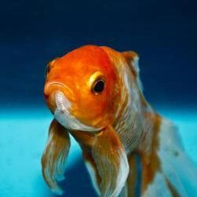
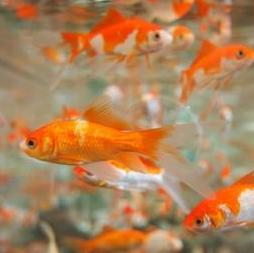

Overview: Whether you won one at a carnival or bought one at the pet store, almost everyone has ended up with a goldfish at some point in their lives. The truth is, they're not as easy to care for as everyone makes it seem. Goldfish should not be considered a beginner's pet because of how much tank maintenance they require. Many people who get goldfish underestimate the amount of work it really takes to keep one alive and happy and they are not to blame. People are very misinformed about animal care and pet stores are partly to blame for that. Without the right equipment, keeping a goldfish alive for more than a few months is almost impossible.
 Diet & Living Spaces: AA goldfish's diet should consist of commercial flakes, but when goldfish swim up to eat their flakes on the surface of the water, they usually end up swallowing some air which causes digestion problems. The best thing to do before feeding your goldfish flakes would be soaking them in some water first, then put the flakes in the water so they all float down and your goldfish doesn't have to swallow any air. In addition to flakes, you can also feed your goldfish commercial pellets, either floating or sinking, although there are benefits and drawbacks to each. Sinking pebbles are beneficial because your goldfish doesn't have to swallow any air and contribute to digestion problems, although the sunken pebbles that are leftover can hide in the tank and pollute the water. Whereas floating pebbles don't pollute the water, but cause digestion problems for your goldfish because of the air they might have swallowed. The same benefits and drawbacks apply to flakes. A goldfish's tank must have at least 20 gallons of purified freshwater with a balanced pH level for each fish living in it. Goldfish’s' tanks get very dirty very quickly and it's important to accommodate their high-waste production by keeping them in a large tank. In addition to having a large tank, goldfish must always be in a filtered tank due to their high oxygen demands. Depending on the type of filter, amount of goldfish you have, and the size of the tank, the amount of times you must clean the tank and replace the water will vary. A large tank with a good filter would only need to be cleaned about once a month. Goldfish would benefit from having live plants in their tank to hide and play (yes fish play), while also contributing to the high-oxygen level demands.
Common Health Issues: One goldfish health issue is ammonia poisoning, which is a common problem in fish tanks, especially new ones. To combat this, you must test the water for ammonia and pH, clean the gravel in the fish tank, avoid overfeeding, overcrowding, and clean your filtration system if necessary. Another health issue is dropsy, if you suspect your fish has dropsy you must quarantine the fish immediately and send them to a veterinarian for treatment. The only way to combat this condition is to maintain your goldfish's water quality, feed them high-quality food, avoid overfeeding, and avoid overcrowding.